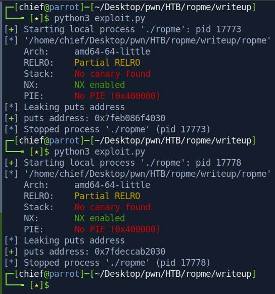

Introduction:
Hello im back with another writeup! This writeup will not be on a box, but instead on a pwn challenge on Hack The Box called Ropme.
I've just started learning pwn, so this writeup might might not be 100% accurate. Feel free to contact me if you find a mistake.
I'll be talking through my thought process when solving this. If it is unclear at some parts, you can watch this video by awesome IppSec.
Let's start hacking~
Binary Analysis:
The first things I do when I get a binary is to play around with it, check its type, architecture and protection.
I will also use Ghidra to decompile it if the assembly is long and confusing.
After we unzip the zip-file, we see a single binary ropme.
Upon execution, it prints a sentence to standard output and starts hanging.
If we type a random string, the binary just exits.
file and checksec:
We can see that the binary is a 64-bit ELF file in little-endian order.
It also has Partial RELRO and NX enabled, which means that we cannot execute shellcode on the stack.
Let's check it out in gdb.
gdb:
I've installed the gef extension for gdb to make it easier to use.
The assembly is fairly simple, and we can figure out the vulnerability with some analysis.
Only 64 bytes of buffer space is allocated to rdi, but we allowed fgets to read up to 500 bytes from standard input.
This will obviously overflow the buffer, and overwrite the return pointer stored on the stack.
Let's verify our hypothesis by sending in 100 bytes of pattern character.
gdb can assist us in generating the pattern.
The binary indeed crashed with a segmentation fault, and we can overwrite the return address after 72 bytes.
With NX enabled, we can't straight away execute shellcode on the stack and have to find another way of getting code execution.
We can do that by calling system with an argument stored in rdi.
However since ASLR is most probably enabled, we have to first leak the memory address of a known function during runtime, so that we can calculate the offset due to ASLR.
Once we know the offset, we can add it to the address of any function we want to call in libc, and that will also be its address during runtime.
Let's leak the memory address of puts, by calling puts and letting it take its GOT address as an argument.
We can call puts or printf on any other function's GOT address and it will work just fine.
The idea is just to print out the memory address of the function at runtime to standard output so we can access it.
The PLT and GOT address of functions can be found with objdump -D.
We can also just use pwntools to automatically find them, as I will show in the exploit code later on.
In order to get the GOT address of puts into rdi, we have to utilise a gadget.

In this case we can use the pop rdi gadget to do so.
Now we are all set, and can start crafting the first stage of the exploit.
Stage 1: Leaking Libc Base
exploit code:
Here I used pwntools to automatically find the addresses of functions we need.
Let's try it on our local binary.

The leak works! Now we can try it on the remote server.
Great, now we have access to the address of puts at runtime.
Before we can start calculating the libc base address, we must take into consideration that the remote server might be using a different libc from us.
We can use this website to find out the libc that our target is using and download it.
Both libcs work. I'll download the 0ubuntu10 version.
Now we can calculate the libc base address.
Since we have access to the address of puts, we can use it to minus the address of puts in libc.
That is the libc base address.
This is the manual way of getting the addresses we need to form the payload system("/bin/sh").
We can do it automatically with pwntools too.
Now we have all we need, and we theoretically can get a shell now.
Let's try it on the remote server directly.
Stage 2: Getting Shell
exploit results:
We don't get a shell, but instead get a weird error message that also appears when you type garbage in the terminal.
That's good news for us, because we know that our system address is right and /bin/sh is the one failing.
Let's see where the %s%s string exist in libc.
Seems like it is just 60 bytes ahead of /bin/sh.
However, we don't know whether the string of %s is from position 1 to 8, 2 to 9 or 3 to 10.
This means that the offset could be 60, 62 or 64 bytes.
Let's try to trigger another error message so we can hopefully get the exact offset.
I'll just add 24 bytes to the offset and see what happens.
Ah yes, we get a new error message.
With some arithmetic, we realise that the offset is 64 bytes.
Let's fix our code and try it against the remote server again.
We get a shell~!
Conclusion:
I had a pretty fun time doing Ropme as it allowed me to put my knowledge from IppSec's video into practise.
This technique of leaking memory addresses is needed for quite a lot of stack-based buffer overflow challenges, and I'm happy that I sort of understand how it works now.
However I am still puzzled about the 64 bytes offset from the random string to /bin/sh... not sure if the libc was intentionally modified to cause this.
Please enlighten me if you know what happened there ;)